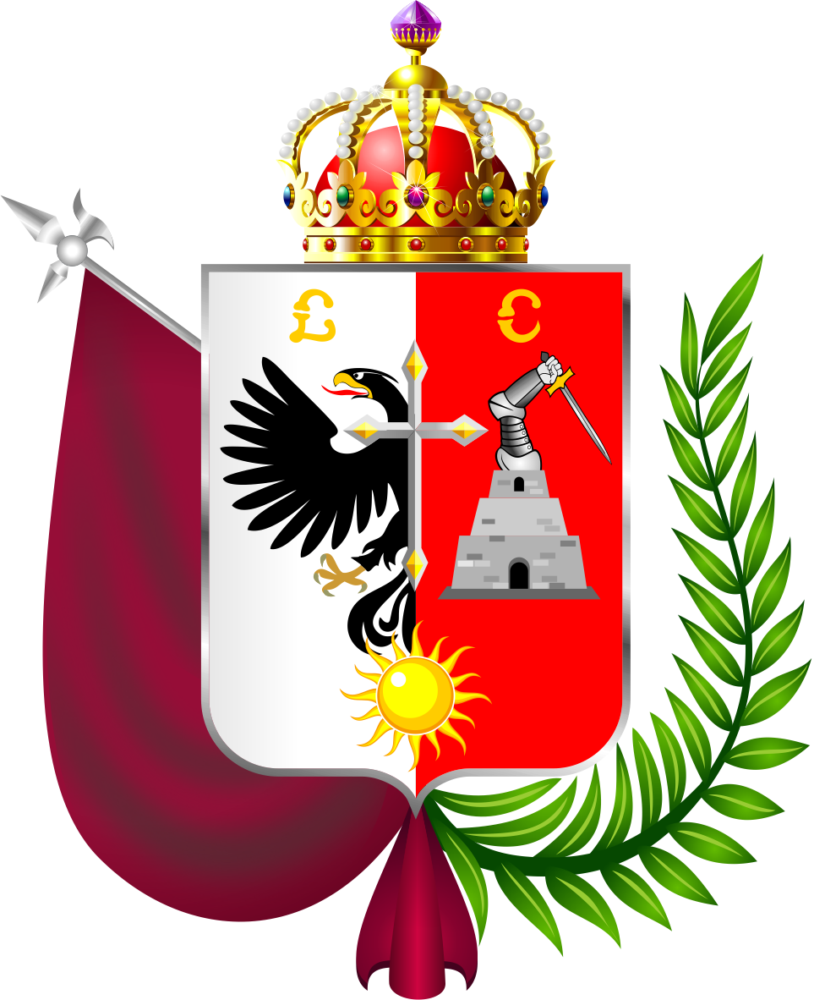

HISTORIA
Hoy en día Cajamarca es la ciudad más importante de la sierra norte peruana. Vive una época de crecimiento económico impulsado por el desarrollo de la minería aurífera, su tradicional ganado vacuno, la agricultura de secano (con el maíz como principal cultivo) y, más recientemente, el turismo.
ESCUDO

GOBERNADOR REGIONAL
Mesías Guevara Amasifuén
MAPA DEL Departamento
PROVINCIAS Y DISTRITOS DE CAJAMARCA
PROVINCIAS:
Cajabamba
DISTRITOS:
- Cachachi
- Condebamba
- Sitacocha
PROVINCIA:
Cajamarca
DISTRITOS:
- Llacanora
- Namora
- Jesús
PROVINCIA
Celendín
DISTRITO:
- La Libertad de Pallán
PROVINCIA
Chota
DISTRITOS:
- Chiguirip
- Cochabamba
- Lajas
- Huambos
- Llama
PROVINCIA
Contumaza
PROVINCIA
Cutervo
DISTRITO:
- Santo Dimingo de la Capilla
PROVINCIA
Hulgayoc
DISTRITOS:
- Bambamarca
- Chugur
- Hualgayoc
PROVINCIA
Jaen
DISTRITOS:
- Bellavista
- Chontalí
- San Jose Del Alto
PROVINCIA
San Ignacio
PROVINCIA
San Marcos
DISTRITOS:
- CGregorio Pita
PROVINCIA
San Miguel
DISTRITOS:
- Bolivar
- Calquis
- Catilluc
- La Florida
- Llapa
- Nanchoc
PROVINCIA
San Pablo
PROVINCIA
Santa Cruz
DISTRITOS:
- Andabamba
- Catache
- La Esperanza
- Ninabamba
- Saucepampa
- Santa Cruz
- Sexi
- Uticyacu
- Yauyucan
PAGINAS IMPORTANTES
1) Página Oficial de la muinicipalidad
2) Página de busqueda del Perú
3) Página de Mapa de Cajamarca